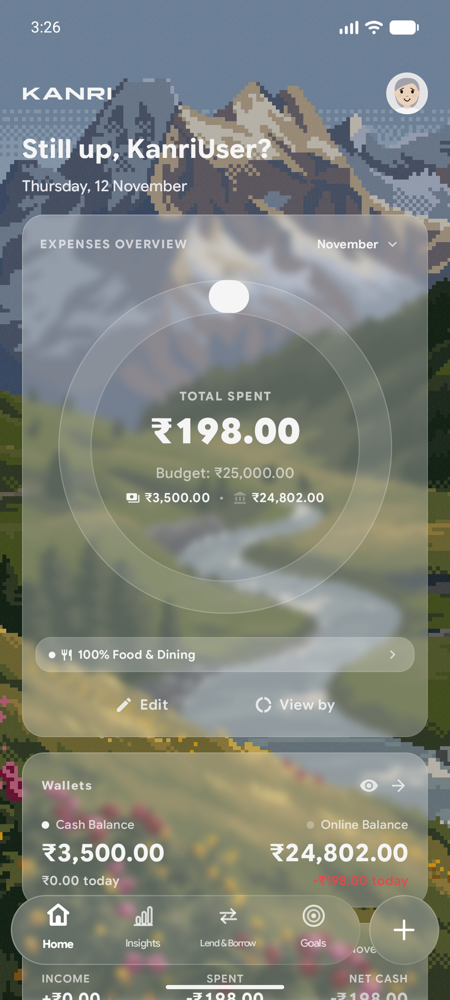

Your money, on your phone. Only.
Kanri reads your bank SMS, logs every rupee automatically, and sends nothing anywhere. Fully offline-first personal finance with zero trackers, zero ads, and open-source sovereignty.
How Kanri Works
Automatic expense logging designed for real Indian payments.
Pay Anywhere
Make any payment using UPI (GPay, PhonePe, Paytm, CRED), credit/debit cards, net banking, or withdraw cash from an ATM.
Instant On-Device Parse
Kanri's local regex engine detects the transactional bank SMS and payment app notification in memory. No network connection is used.
1-Tap Categorization
A lightweight floating overlay lets you confirm the category in 1 tap right as you walk away from the billing counter, or logs automatically via merchant rules.
Try the SMS Parser
Tested on 15+ Indian bank formats. Runs 100% in your browser—nothing is uploaded.
SMS + Notification Fusion with 5-Minute Deduplication
SMS messages provide authoritative amounts and bank balances, while UPI notifications provide rich merchant names and recipient VPA addresses.
Kanri's 5-minute sliding window deduplication engine correlates SMS and notification alerts using UTR references and timestamps, merging them into a single clean transaction with zero duplicate records.
Cash vs. Online Wallets & Smart ATM Modes
Money isn't only in your bank. Kanri maintains strict dual wallets for Online (Bank / UPI / Cards) and Cash.
When you withdraw money from an ATM, Kanri doesn't mark it as an expense. Instead, it offers smart ATM modes to move money seamlessly from Online to Cash without distorting your actual spending metrics.

Lend, Borrow, and Split Shared Bills
Keep track of money you owe or are owed. Log partial repayments, generate pre-filled WhatsApp reminder messages in 1 tap, and launch upi://pay settlement deep links.
Split dinner or trip bills across 2 to 20 people with custom or equal share calculations.
Salary-Synced Budgets & Safe-to-Spend Daily Allowance
Real paychecks don't start on the 1st. Choose any budget cycle start day between 1st and 28th to align perfectly with your salary credit date.
Kanri calculates your real-time Safe-to-Spend daily allowance: (Remaining Budget ÷ Days Left) so you know exactly how much you can spend today without running out before payday.
18+ Analytical Visualizations
Understand your spending psychology with GitHub-style contribution heatmaps, a 365-day matrix, spending velocity vs. calendar day, burn-rate projections, month-over-month comparisons, and category recap cards.
All visualizations render with GPU-accelerated canvas routines and zero tracking telemetry.

0–100 Financial Health Score
An objective, transparent health score built on four balanced 25-point pillars:
- Savings Rate (25 pts): ≥ 20% of income saved for full score.
- Budget Adherence (25 pts): Staying ≤ 90% of cycle budget.
- Spend Velocity (25 pts): Pacing matching or below calendar progress.
- Debt Ratio (25 pts): Net positive receivables over liabilities.
12 Pixel DotTiles Widgets
Crafted with authentic dot-matrix typography (Ndot57 font) and midnight battery-safe resets. Your finances, right on your Android home screen.
5 Themes & Liquid Glass Engine
Engineered with AGSL GPU half-precision optimizations, touch-pause gesture freezing, and 22 animated backdrops.
Security & Data Sovereignty
Your financial data belongs exclusively to you. Sealed with Android Keystore hardware keys.
SQLCipher AES-256
All SQLite database files are encrypted at rest using 256-bit AES encryption. Even with root, data cannot be read without Keystore access.
Biometric Auto-Lock
Protected by native Android BiometricPrompt hardware security with instant screen-off auto-lock.
Encrypted Backups
Exported backup files (.enc) are encrypted locally using PBKDF2 with 65,536 iterations and AES-GCM before saving or syncing.
Optional Drive Backup
Direct TLS connection to Google Drive API scoped exclusively to drive.file. Kanri can never see your photos, docs, or other files.
Permissions, Explained Honestly
Kanri requests strictly the permissions needed to parse your transactions locally. None are used to upload personal data.
| Permission | Technical Name | Why Kanri Needs It | What Kanri Never Does |
|---|---|---|---|
| SMS Capture | RECEIVE_SMSREAD_SMS |
Parses incoming bank transactional SMS in memory to automatically log spending without manual typing. | Never uploads SMS texts. Never logs OTPs or personal chats. |
| Notification Access | BIND_NOTIFICATION_LISTENER_SERVICE |
Captures payment app alerts (GPay, PhonePe, Paytm, CRED) for instant merchant name enrichment and credits. | Never captures messages from social, messaging, or non-payment applications. |
| Instant Overlay | SYSTEM_ALERT_WINDOW |
Displays a lightweight 1-tap category chip for 5 seconds immediately following an in-store payment. | Never captures screen contents or displays popups outside payment confirmation. |
| Biometric Lock | USE_BIOMETRIC |
Protects app entry using fingerprint or face unlock hardware authentication. | Never handles raw biometric data (handled strictly by Android TEE). |
| Reminders | POST_NOTIFICATIONS |
Sends local 9 PM daily review nudges and upcoming debt repayment alerts. | Never sends marketing, promotional, or remote push notifications. |
| Network Access | INTERNETACCESS_NETWORK_STATE |
Communicates directly with Google Drive API when you enable optional Cloud Backup, and checks for verified GitHub updates. | Never sends analytics, telemetry, crash logs, or spending habits to any third-party server. |
Kanri works seamlessly as a 100% manual ledger. You can manually enter transactions, configure salary budgets, split bills, track lent money, and enjoy all 12 widgets and 18+ visualizers without ever granting SMS permissions.
Why Kanri?
An honest, principle-first comparison of typical cloud expense trackers versus Kanri.
| Principle | Typical Cloud Trackers | Kanri |
|---|---|---|
| Account Requirement | Mandatory phone number, email, or Google login | Zero account or registration required |
| Where Data Lives | Company cloud database servers | On-device SQLite database (AES-256 encrypted) |
| Advertising & Monetization | Credit card offers, loan ads, cross-selling | Zero ads, zero sponsors, zero cross-selling |
| Third-Party Analytics | Firebase, Mixpanel, AppsFlyer, Facebook SDK | Zero tracking or telemetry SDKs |
| Source Code | Closed proprietary source code | 100% Open Source under GNU GPL-3.0 |
| Cloud Backup | Mandatory sync to vendor's servers | Optional, client-side encrypted to your Google Drive |
Supported Banks & Payment Apps
Custom-tuned regex patterns verified across major Indian banking formats.
Top Public & Private Sector Banks
State Bank of India (SBI) · HDFC Bank · ICICI Bank · Axis Bank · Kotak Mahindra Bank · Bank of Baroda (BOB) · Punjab National Bank (PNB) · IDFC FIRST Bank · Canara Bank · Union Bank of India · IndusInd Bank · Bank of India (BOI) · Indian Bank · Central Bank of India · Yes Bank · Federal Bank · RBL Bank · IDBI Bank · UCO Bank · Bank of Maharashtra · Punjab & Sind Bank · Indian Overseas Bank (IOB) · South Indian Bank · Bandhan Bank · City Union Bank · Karur Vysya Bank · Karnataka Bank · Standard Chartered · HSBC · Citi
UPI & Payment Apps
Google Pay (GPay) · PhonePe · Paytm · CRED · FamPay · BHIM · Amazon Pay · Flipkart · Navi · Jupiter · Fi (Epifi)
Bank and app names are trademarks of their respective owners. Kanri is an independent open-source tool and is not affiliated with, sponsored by, or endorsed by any of them.
Download Kanri
Free and open-source software. No subscription, no paywalls, no tracking.
macOS / Linux: shasum -a 256 Kanri-v1.19.8-release.apk
Installing on Android 13 and Newer
Because Kanri is distributed directly as an open-source APK rather than through Google Play, Android 13+ applies a security safeguard called Restricted settings to protect against malicious sideloaded apps.
- Install the APK and open Kanri.
- When prompted for Notification Listener or SMS access, Android may show "Restricted setting".
- Go to your phone's Settings > Apps > Kanri.
- Tap the three dots (⋮) in the top-right corner.
- Tap Allow restricted settings and authenticate with your fingerprint or PIN.
- Return to Kanri to complete the setup.
Frequently Asked Questions
Everything you need to know about Kanri's architecture, privacy, and backups.
Is Kanri really offline?
drive.file) and an in-app GitHub release update check.
Does it read my OTPs?
Which banks work?
How are cards and ATM withdrawals handled?
Why does a sideloaded app need "restricted settings"?
How do I back up and move to a new phone?
kanri_backup.enc) under Settings > Backup & Restore, or use the optional Google Drive sync. On your new phone, install Kanri, choose "Restore from Backup", enter your password, and your entire history is restored in seconds.
Is my data encrypted?
Does it work without SMS permission?
Can I export my data?
Is it free? Is it open source?
How do I report a bug or request a bank?
Proudly Open Source
Kanri is licensed under GPL-3.0. You have the right to inspect every line of code, build the APK from source yourself, and verify that your financial privacy is genuinely respected.